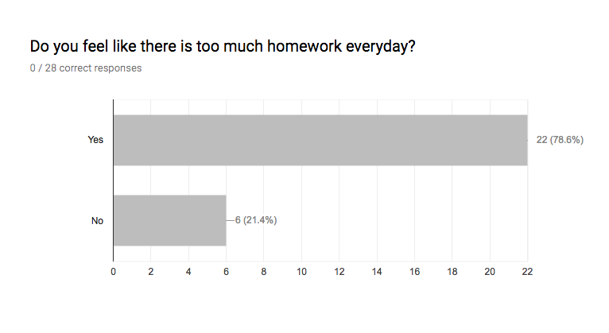
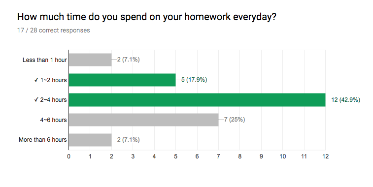
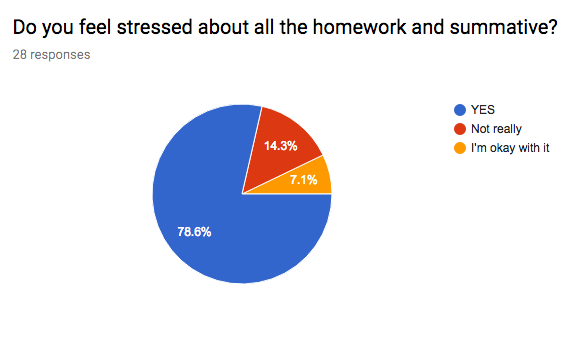
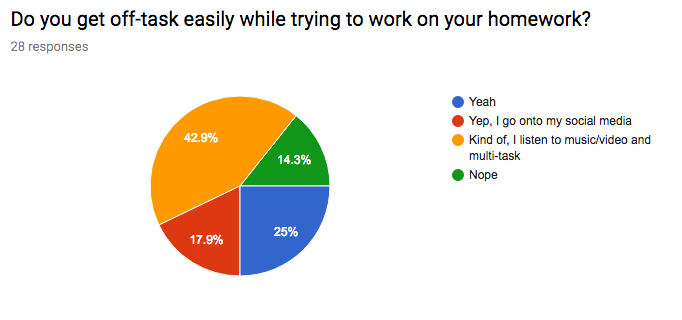
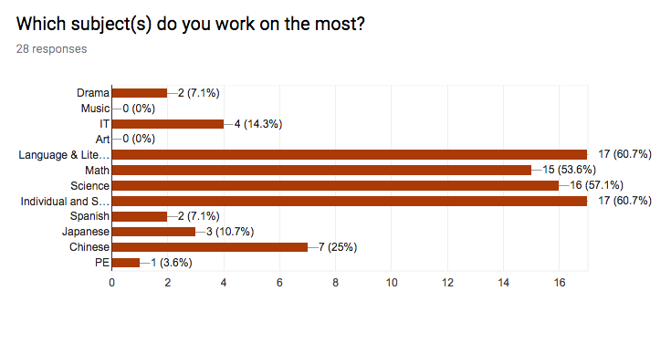
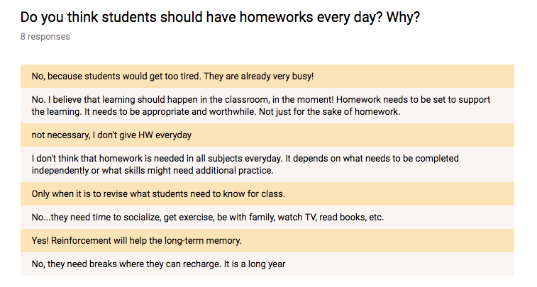
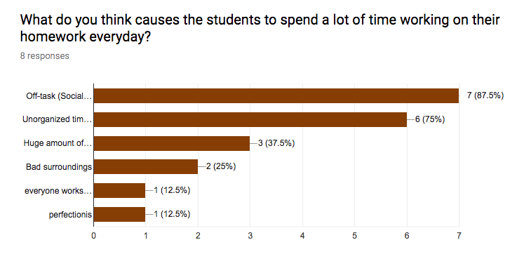
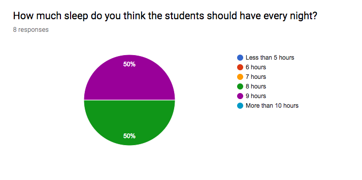
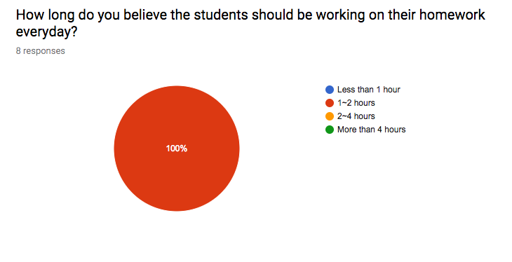
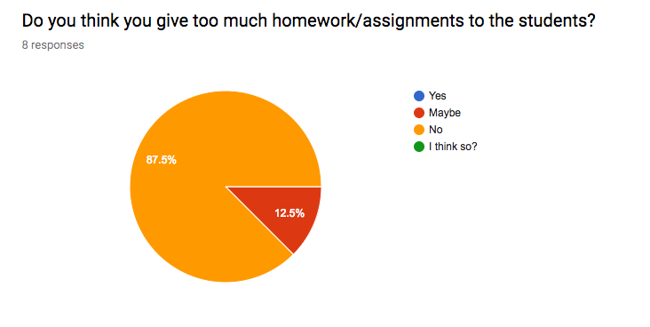

How Is Homework Affecting The Students?


From kindergarten to high school, recent research suggests that some students are getting excessive amounts of homework. And when the students are required to handle so many things at once, they lead to significant stress for the students and for their parents. It looks like both National Education Association (NEA) and the National PTA (NPTA) support a standard of “10 minutes of homework per grade level” and setting a general limit on after-school studying. But is that really the case for many students these days? Even the kindergarteners have 25 minutes of homework overnight on average, where based on NEA and NPTA, there should be none.
A 2007 Metlife study found that 45 percent of students in grades three to 12 spend more than an hour a night doing homework, including the six percent of students who report spending more than three hours a night on their homework. In the 2002-2003 school year, a study out of the University of Michigan found that American students ages six through 17 spent three hours and 38 minutes per week doing homework.
All the extra homework also connects to family stress, especially when the parents with limited education where they are not confident. When a parent stopped letting their child do their homework, this had taken stress out of their afternoons and evenings. This also allowed their child to participate in after-school activities.
“The data shows that homework over this level is not only not beneficial to children’s grades or GPA, but there’s really a plethora of evidence that it’s detrimental to their attitude about school, their grades, their self-confidence, their social skills, and their quality of life,” Donaldson-Pressman said.
When we look at the high schoolers, research that was conducted at Stanford university found out that students who spend too much time on homework experience more stress, physical health problems, a lack of balance in their lives, and alienation from society. Another research surveyed 4,300 students in 10 high-performing high schools in California. When it came to stress, more than 70 percent of students said they were “often or always stressed over schoolwork,” and 56 percent listing homework as a primary stressor. Only less than 1 percent of the students said homework was not a stressor. Researchers asked students whether they experienced physical symptoms of stress, such as headaches, exhaustion, sleep deprivation, weight loss, and stomach problems. Than more than 80 percent of students reported that they have at least one stress-related symptom in the past month, and 44 percent said they had experienced three or more symptoms.
Survey Results from Middle School Students:





Opinions from the Middle School Teachers:




